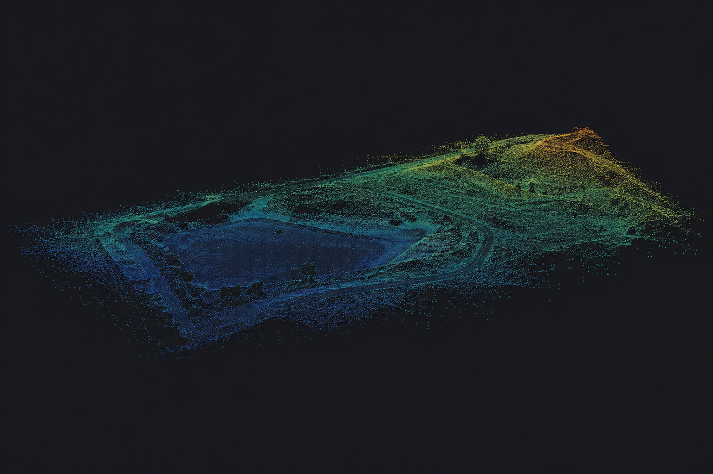
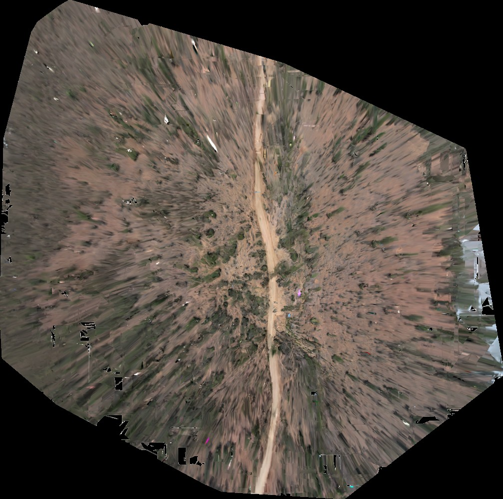

Dense point cloud
2,429,114 reconstructed points
01 FIELD RECORD DRONE VIDEO → 3D
FROZEN BASELINE R1 / GEOREFERENCED
From moving video to a georeferenced 3D record of the ground below.
Explore the reconstruction

Internal residuals describe alignment to input GPS. Independent checkpoints are required to establish survey accuracy.
02 THE TRANSFORMATION
Trace every frame from the source recording through to the reconstructed surface.
R1 starts from DJI_0142.MP4, a 193.5934-second flight recording. The original stays unchanged while a deterministic frame set is prepared.
03 THE HANDOFF
Explore the output families produced by the reconstruction workflow. This demo record uses the frozen R1 acceptance reference.
Creates a local JSON summary in your browser.2,429,114 reconstructed points
3D mesh · 194,663 vertices
Georeferenced raster preview
Frames · telemetry · engine · metrics
Measure with context. Geographic alignment is present in the R1 fixture. Ground-truth accuracy and complete visible-scene coverage remain unverified without independent survey evidence.